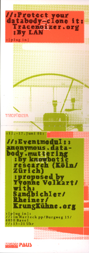

| user |
| home page |
|  | The politicians gathered there could react to the messages vial mobile telephone. With a web cam, the image of the projected texts were broadcast back to the website. On occasions there were simultaneously over 400 users on the Hellomrpresident-Server. Movement and sound are closely interwoven with one another, and refer to the utopia of a melding of human being, machine, and surroundings. The space becomes a resounding expression of the dancing interaction. |